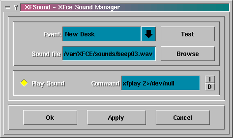

- "Event" détermine le type d'évènement
- "Sound file" est le fichier son qui sera joué quand "event" se produira..
- "Command line" est la commande utilisée pour jouer le son
- "Play sound" détermine si les sons sont emis ou non.
- "Test" pemet de jouer le fichier son (en utilisant la commande définit dans le champ "Command line")
- Les deux petits boutons marqués "I" et "D" permettent d'utiliser respectivement le méchanisme de restitution sonore interne ou externe (par défaut)
- Startup est le son joué au démarrage du module XFSound
- Shutdown est l'évènement lié à la fin de XFSound.
- Unknown est le son joué lorsque survient un évènement inconnu de XFSound.
Le gestionnaire de sons systèmes de XFce est à la fois un module et une application qui reste à l'écoute des évènements et joue les sons en conséquence.
1) Le concept de base
Quand XFSound est démarré comme module (c'est à dire depuis XFce ou XFwm en utilisant le mot clé "Module"), il se met en boucle en attendant le évènements provenant du gestionnaire de fenêtres (XFwm)
Lorsque un évènement se produit, XFSound exécute la commande spécifiée par l'utilisateur pour emettre le sons correspondant à l'évènement.
L'utilisateur agit sur XFSound par l'intermédiaire de son interface
graphique en demarrant XFSound comme une application X normale (c'est à
dire pas en tant que module)
2) L'interface utilisateur
Pour obtenir l'inteface utilisateur de XFSound, il suffit de le lancer
depuis la ligne de commande, en tapant xfsound :

3) Les évènements
XFwm émet une large variété d'évènements. XFSound couvre ceux qui proviennent essentiellement des actions utilisateur.
Les 3 derniers évènements ne sont pas vraiement des évènements de XFwm :
4) La commande qui joue le son : xfplay
XFce procure sa propre commande pour jouer le sons.. xfplay, comme elle s'appelle, utilise sox pour convertir le fichier .wav en donnéée brutes qui sont envoyées à /dev/dsp
xplay est un scripte shell qui contient la commande suivante
:
| sox $1 -t .raw -r 8000 - > /dev/dsp |
Cette methode est plutôt simple et robuste, cependant sox ne semble pas être capable de convertir des fichiers wave sur 16 bits automatiquement.
Pour obtenir les meilleurs résultats, utilisez des échantillons sur 8 bits a 8000 Hz.
Pour utiliser le méchanisme interne de restitution de son, il faut utiliser le mot clé "internal" comme commande (ceci peut être obtenu directement en pressant le petit bouton "I"). Le méchanisme interne sollicite moins le processeur et les ressources systèmes, mais requiert des fichiers son bruts (cd qui n'est pas le cas des fichiers Wav).
Pour revenir à la commande externe, il suffit de presser le bouton "D" (comme Défaut).
5) XFsound et les autres Gestionnaires de Fenêtres
XFwm et les autres gestionnaires de fenêtres de la famille de FVWM partagent plus ou moins le même schéma d'évènements. Par conséquent, XFSound devrait fonctionner avec d'autres gestionnaires de fenêtres tels que FVWM, FVWM2, Afterstep, FVWM-95, etc.
6) Le démarrage automatique de XFSound
Pour éviter des incompatibilités avec certains kernels, XFSound n'est pas lancé automatiquement depuis XFwm.
XFSound est lancé par les fonctions réservées "InitFunction" et "RestartFunction" dans le fichier system.xfwmrc.
Si vous utilisez une version modifiée de system.xfwmrc
(également appelé sample.xfwmrc ou .xfwmrc),
il vous faut ajouter les lignes suivantes a votre fichier de configuration
system.xfwmrc
:
| AddToFunc "InitFunction"
+ "I" Module xfsound AddToFunc "RestartFunction"
|